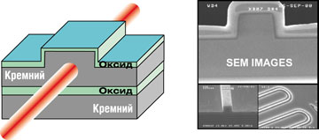
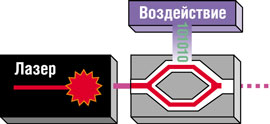
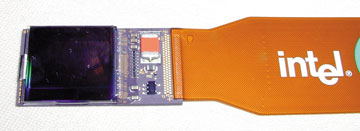
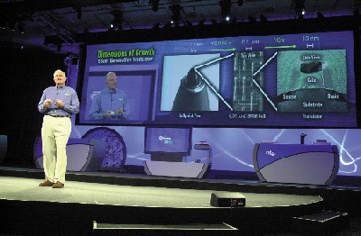
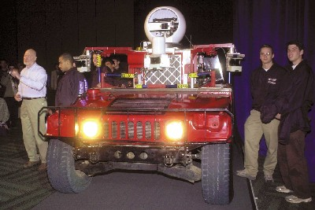
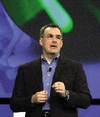

Евгений Рудометов
rudometov@mail.ru
Современное состояние полупроводниковых и компьютерных технологий и их развитие требуют высокого уровня научно-технических исследований и организации соответствующих производств. В этих процессах заняты миллионы специалистов в тысячах фирм в разных странах. Без координации их усилий и планирования работ невозможно поддержание высоких темпов развития наукоемких технологий, выпуск перспективных электронных и аппаратно-программных решений, а также эффективное их внедрение в самые разные сферы человеческой деятельности.
Именно с этой целью в мире проводятся многочисленные научно-технические школы, семинары, встречи и конференции. Одно из самых известных и авторитетных среди таких мероприятий - традиционный Форум Intel для разработчиков (Intel Developer Forum, IDF).
Форум IDF состоит из серии международных сессий, проводимых последовательно в разных странах мира, для которых характерны высокие темпы развития информационных технологий. Напомним, что к их числу уже ряд лет относится и Россия - именно поэтому в нашей стране, начиная с 2002 г., стали проводиться осенние сессии Форума. Местом для этих мероприятий поначалу была выбрана Москва, однако в текущем году в России планируется провести сессии IDF уже дважды и в двух городах: весной - в Новосибирске (17 мая), а осенью (ориентировочно в октябре) - в Москве.
Оценивая значение этих мероприятий, необходимо напомнить, что IDF - крупнейшее мероприятие для разработчиков аппаратных средств и ПО. Форум собирает ведущих представителей науки и техники для рассмотрения различных вопросов, связанных с компьютерными технологиями и продукцией электронных отраслей, предназначенной для ПК, серверов, коммуникационного оборудования, ноутбуков и карманных вычислительных устройств. На сессиях Форума анализируются темпы развития указанных отраслей и возникающие проблемы, анонсируются новейшие технологии и изделия, выпускаемые не только основным устроителем - корпорацией Intel, но и другими компаниями.
Очередной Форум для разработчиков, IDF Spring 2004, состоялся недавно в Сан-Франциско (шт. Калифорния, США). Этот Форум открыл весеннюю серию 2004 г. и был посвящен актуальным проблемам отрасли на этапе выхода ее из кризиса, а также перспективным полупроводниковым и компьютерным технологиям. В работе Форума участвовало около пяти тысяч человек.
От традиционной электроники к фотонике
Накануне Форума еще до официального открытия IDF Spring 2004 для приглашенных журналистов был проведен специальный пресс-брифинг, на котором специалисты Intel рассказали о перспективных исследовательских работах, анонсировали новейшие технологии и продемонстрировали образцы некоторых изделий.
Одно из представленных направлений, имеющих большое значение для дальнейшего развития ИТ-отрасли промышленности, - это кремниевая фотоника. Брифинг, посвященный данной теме, провели Кевин Канн (Dr. Kevin Kahn), директор Communications Technology Lab, и Марио Паниччиа (Dr. Mario Paniccia), директор Photonics Research Lab (оба подразделения входят в Corporate Technology Group корпорации Intel).
Перспективность исследований в этой области связана с тем, что свет как передающая среда обладает очень высокой информационной емкостью. Именно этим объясняется популярность волоконно-оптических линий связи, вытесняющих традиционные медные провода в системах проводной передачи данных. Кроме того, световые сигналы, в отличие от электрических, не подвержены искажениям под воздействием электрических и магнитных полей. Благодаря этому обеспечивается высокая помехозащищенность и конфиденциальность передаваемой по световодам информации.
Как следствие стремительного роста объемов информации, неуклонно повышаются и требования к полосе пропускания систем обработки и передачи данных. Производительность электронных компонентов компьютеров увеличивается за счет совершенствования внутренней архитектуры микросхем и роста их тактовых частот (это, в свою очередь, достигается благодаря развитию полупроводниковых технологий и уменьшению размеров транзисторов). Однако скорость обработки данных все больше превосходит темпы обмена результатами вычислений между активными элементами вычислительных систем, и связано это с ограниченными возможностями существующих линий связи. По оценке международной ассоциации производителей полупроводников Sematech, предел развития технологий с металлическими проводниками наступит уже после 2008 г.; единственная альтернатива - использование оптических технологий и соответствующих высокопроизводительных фотоэлектронных приборов.
Для решения данной проблемы во всем мире ведутся работы по созданию фотоэлектронных приборов. На рынке представлено множество таких изделий - от ставших традиционными волоконных линий, соответствующих коннекторов и фотоэлектрических преобразователей до широкого спектра коммутаторов, модуляторов, усилителей и т. п.
В основе их устройства лежат разнообразные фотоэлектрические эффекты, а также ряд технологий MEMS, обеспечивающих, например, механические способы модуляции и коммутации световых потоков. Однако используемые до сих пор изделия рассчитаны на частоты, значения которых уже не соответствуют уровню скоростей современных полупроводниковых микросхем. Эти микросхемы составляют электронное окружение оптических изделий, которые до последнего времени, как правило, представляли собой отдельные устройства, производимые на основе кварцевого или фторидного стекла, легированного различными редкоземельными элементами, или сравнительно сложных и дорогих полупроводниковых материалов (арсенида галлия или фосфида индия), требующих соответствующих технологий и оборудования.
Достижение исследователей корпорации Intel состоит в том, что они создали быстрый модулятор светового потока - оптическое устройство, выполненное, как и классические микросхемы, на базе кремниевых технологий. В результате появилась реальная возможность обеспечить скоростную и помехозащищенную передачу информации как между компьютерами, их комплектующими и микросхемами, так и между отдельными узлами внутри самих микросхем, снижая общую электромагнитную нагрузку на эти узлы.
Работа представленного варианта модулятора основана на том, что исследователям Intel удалось разделить свет миниатюрного лазера на два идентичных луча. Затем один из них пропускают через полупроводниковую структуру, подобную кремниевому транзистору (рис. 1), и воздействуют на него переменным электрическим зарядом. В результате подвергнувшийся обработке луч оказывается промодулированным по фазе. При соединении обоих лучей с учетом сдвига их фаз образуется последовательность световых импульсов (рис. 2). Таким образом, в созданной Intel микросхеме световой поток модулируется за счет эффекта интерференции двух лучей света, фазы которых либо совпадают (передается "1"), либо находятся в противофазе (передается "0").
|  | Рис. 1. Структура полупроводникового модулирующего элемента.
|
|  | Рис. 2. Модулирование светового потока.
|
К настоящему времени исследователям удалось создать высокоскоростной модулятор с частотой 1 ГГц - это по крайней мере в 50 раз быстрее, чем до сих пор удавалось достичь в подобных системах с помощью традиционных методов и средств. А специалисты Intel утверждают, что достигнутое значение уже в ближайшие годы может быть перекрыто как минимум в десять раз. Это позволит на основе достижений кремниевой фотоники создавать помехозащищенные высокоскоростные линии связи. Кроме того, результаты исследований Intel найдут применение в архитектуре компьютеров, устройствах хранения информации и системах оптического управления.
ИТ-культура и технологии
Одно из выступлений на Форуме было посвящено влиянию компьютерных технологий и изделий на культуры разных народов и стран. Некоторые результаты исследования опыта внедрения и использования новых информационных технологий в разных странах, а также возникающие на этом пути неизбежные трудности, связанные с особенностями культур, обычаев, религий, были представлены Женевьевой Белл (Dr. Genevieve Bell) из Intel Research Corporate Technology Group. Учет всех особенностей этносов позволяет достичь максимального положительного эффекта от внедрения новейших технологий и изделий как в промышленности и сельском хозяйстве, так и в сфере образования, медицины и, конечно, быта. Это позволяет говорить о появлении нового пласта культуры - ИТ-культуры.
С этой темой пересекается и проект "Цифровой дом", развиваемый корпорацией Intel уже несколько лет и неоднократно представленный на разных сессиях IDF. Цель проекта - расширить функциональные возможности современного компьютера и интерфейсов. Реализация этих планов позволит в перспективе мощным компьютерам будущего, снабженным датчиками и адаптивными средствами человеко-машинного интерфейса, взять на себя охрану дома, здоровья, заботу о детях и пользователях преклонного возраста. Однако уже сегодня компьютер быстро становится центром развлечений, связи, обучения и надомной работы, он способен заменить традиционные аудио- и видеомагнитофон и, разумеется, телевизор.
Говоря об использовании современного компьютера в качестве такого мультицентра, необходимо отметить, что корпорация Intel уделяет большое внимание расширению его видеофункций. О важности этого направления говорит хотя бы тот факт, что человек до 90% информации об окружающем мире воспринимает посредством зрения.
Для реализаций этих функций компьютеру, кроме мощных вычислительных и мультимедийных возможностей, предоставляемых современными процессорами и другими элементами и узлами его архитектуры, потребуются соответствующие высококачественные средства отображения информации. В качестве альтернативы большим плазменным и ЖК-мониторам корпорация Intel предлагает свое решение, в основе которого лежит оригинальная технология с кодовым названием Cayley, построенная по технологии LCOS (Liquid Crystal on Silicon).
Эта разработка привела к созданию на основе полупроводниковых технологий Intel миниатюрных дисплеев высокого разрешения и большой яркости (рис. 3). Представленный на IDF вариант LCOS-микродисплея имеет размер 0,8 дюйма и представляет собой слой жидких кристаллов, помещенный между стеклянной пластиной и зеркальной полупроводниковой поверхностью с высокими отражающими свойствами, на которую вынесена вся схема управления пикселами. Такое решение, допускающее работу с несколькими дисплеями одновременно, позволяет создавать высококачественные проекционные экраны телевизоров и компактные проекторы для домашнего кинотеатра. Но их можно использовать и как средства отображения информации компьютерных систем.
Достоинство конструкции дисплея - соответствие полупроводниковым технологиям, которые Intel использует в производстве своих микросхем. Это позволяет сохранять конкурентоспособные цены и наращивать разрешение в соответствии с законом Мура, по мере эволюции техпроцессов и уменьшения размеров элементов. Intel планирует наладить массовый выпуск микродисплеев на базе технологии Cayley уже в 2004 г.
|  | Рис. 3. LCOS-микродисплей.
|
Рост экономики и технологий
В ключевых докладах Форума разработчиков продолжалось обсуждение перспективных компьютерных технологий и демонстрация новейших изделий. По устоявшейся традиции, эти основные доклады были сделаны высшими руководителями корпорации Intel.
Серию ключевых докладов открыло выступление Крейга Барретта (Craig Barrett), главного исполнительного директора Intel (рис. 4). Он подтвердил, что, по всем показателям, самый глубокий кризис в истории компьютерной отрасли закончился. Кстати, г-н Барретт предсказывал скорое окончание кризиса на одном из IDF два года назад, напоминая, что все кризисы рано или поздно заканчиваются и надо использовать этот период для проведения реорганизации, не снижая темпов научно-исследовательских работ. Теперь же кризис, по всем признакам, миновал, и в более выгодном положении оказались те фирмы, которые даже в условиях спада не прекращали своих исследований.
|  |
| Рис. 4. Выступает Крейг Барретт, CEO корпорации Intel.
|
В своем выступлении Крейг Барретт изложил видение того, как распространение цифровых технологий и технологический прогресс способны преобразовать коммерческую деятельность, развлечения и связь во всем мире. В очередной раз он обратил внимание присутствующих на ускорение конвергенции компьютерных и коммуникационных технологий и ту роль, которую играет корпорация Intel в процессах развития беспроводных спецификаций и технологий, таких, как IEEE 802.11, USB (Ultra Wideband с полосой пропускания до 0,5 Гбит/с) и т. п. Использование беспроводных и ряда других перспективных технологий в состоянии изменить наш быт и вид привычных изделий. В ходе доклада были продемонстрированы видеосистемы, использующие устройства с технологией LCOS и многоканальную обработку звука.
В серверном секторе "топовыми" решениями у Intel остаются системы на основе процессоров Intel Itanium 2; в 2003 г. процессоров семейства Itanium было поставлено более 100 тыс. шт. В очередной раз Крейг Барретт подчеркнул, что наблюдающийся сейчас рост в отраслях, связанных с высокими технологиями, создает благоприятные условия для инвестиций. В результате началось массовое развертывание систем на базе процессоров Intel Itanium 2 во многих компаниях в мире, включая крупнейшие финансовые и торговые фирмы.
По мнению CEO Intel, результаты конвергенции и развитие технологий уже в самое ближайшее время приведут к тому, что методики и технологии, применяемые сегодня в сфере развлечений, будут использоваться в таких областях, как здравоохранение, естественные науки, генная инженерия и новые формы компьютерных приложений. Г-н Барретт рассказал о работах в области перспективных технологий, к которым относятся хорошо известные Hyper-Threading и Intel Centrino, а также новейшие LaGrande (повышение безопасности вычислений) и Vanderpool (увеличение надежности, гибкости и быстродействия).
Из других перспективных разработок Крейг Барретт отметил планируемую поддержку 64-разрядных инструкций 32-разрядными процессорами, - эта архитектура получила наименование "технология IA32e". Как подчеркнул г-н Барретт, пока речь идет только о рынке серверов и рабочих станций, и в данном секторе эта технология будет реализована уже в 2004 г. Объектом ее приложения станут следующие поколения серверных процессоров Intel Xeon. В дальнейшем же по мере расширения рынка ПО, ориентированного на 64-разрядные вычисления и представленного соответствующими вариантами ОС и приложений, такая поддержка появится и в процессорах для настольных компьютеров.
И Крейг Барретт, и последующие докладчики, и специалисты, участвовавшие в многочисленных открытых круглых столах, многократно подчеркивали, что архитектура IA32e - это не копирование уже существующих архитектур AMD. Более того, неоднократно отмечалось, что сама система команд не является собственностью конкурирующей компании. Кроме того, архитектуры процессоров, представленных обоими производителями, различны и имеют свои особенности. Эти особенности найдут соответствующее воплощение и в 32-, и в 64-разрядных наборах команд (примерно так, как это было сделано в MMX, SSE и т. п.). Во многих командах совместимость будет присутствовать, однако будут, без сомнения, и отличия. Различия в изделиях от Intel и AMD будут связаны в основном с разными архитектурами, разными подходами к проектированию процессоров, разными технологиями. В качестве примера можно привести технологии Hyper-Threading и SSE3, реализованные в продукции Intel и отсутствующие у конкурента. Но в то же время в процессорах AMD используется ряд собственных разработок, например, 3DNow!, не имеющих аналогов в изделиях Intel.
Говоря о перспективных исследованиях корпорации, Крейг Барретт привел в пример работы, связанные с конструированием интеллектуальных систем. Одна из таких разработок была анонсирована в последних пресс-релизах Intel. Речь идет о полностью автономном автоматическом управлении автомобилями, реализованном на основе нескольких компьютеров с процессорами Intel Itanium 2 и Xeon (рис. 5). О сложности задачи говорит тот факт, что на представленном в ходе доклада внедорожнике Hummer был установлен компьютер на базе четырех процессоров Intel Itanium 2, дополненный четырьмя системами, каждая из которых выполнена на двух процессорах Intel Xeon. Высокая производительность вычислений необходима потому, что участие человека в управлении автомобилем не предусмотрено вообще. Аппаратно-программный комплекс должен самостоятельно выполнять маневры, рассчитывая курс с помощью системы GPS и считывая данные с многочисленных сенсоров окружающего пространства, а также выполняя на основе встроенных датчиков частые операции самодиагностики. При этом скорость движения на отдельных участках составляет до 100 км/час, что недоступно для ранее предлагавшихся решений.
|  |
| Рис. 5. Автомобиль с автономной компьютерной системой автоматического управления.
|
"Цифровой дом"
Кроме ярких, амбициозных проектов, направленных в будущее, на Форуме были представлены и разработки, которые могут быть реализованы уже сегодня. Одна из них - концепция Digital Home ("Цифровой дом"), которой был посвящен доклад Льюиса Бернса (Louis Burns), вицe-прeзидeнта Intel и генерального менеджера подразделения Desktop Platforms Group (рис. 6).
|  | Рис. 6. Концепцию "Цифровой дом" представляет Льюис Бернс, вицe-прeзидeнт Intel и генеральный менеджер подразделения Desktop Platforms Group.
|
В основе концепции "Цифровой дом" лежит обобщенное понятие обработки информации. Под информацией понимаются игры, аудио- и видеоданные, включая телевизионные программы, данные на оптических дисках и т. п. Информация должна накапливаться, обрабатываться и храниться неограниченное время при помощи компьютерных средств. В перспективе - не только воспроизведение контента, но и управление бытовыми приборами, охраной жилища и здоровья людей.
Для реализации "Цифрового дома", по мнению специалистов Intel, прежде всего необходима унификация платформ, предусматривающая слияние компьютерной, коммуникационной и бытовой электроники. Созданные в результате такого слияния бытовые устройства должны быть максимально удобны в использовании, в частности, быть готовы к использованию сразу после распаковки; взаимодействовать без проводов с минимальным количеством пультов дистанционного управления; обеспечивать доставку контента с высоким качеством аудио- и видеоданных.
Корпорация Intel в сотрудничестве с другими фирмами разрабатывает конструкцию унифицированной платформы для "цифрового дома". Один из результатов - платформа, получившая наименование Kessler. Это устройство, созданное на базе компьютера и управляемое с помощью пульта дистанционного управления, включает в себя ТВ-тюнер, DVD-проигрыватель и персональное цифровое записывающее устройство (PVR). Другой вариант - созданный Intel прототип эталонной платформы Sandow. Эта разработка, которую планируется выпустить в 2005 г., кроме названных, поддерживает еще ряд возможностей, например, высококачественной видеозаписи в формате HDTV.
Представленные унифицированные платформы рассчитаны на использование процессоров Intel Pentium 4 (Prescott) и готовящегося к выпуску набора микросхем с названием Grantsdale. Этот набор в варианте для массового использования будет включать встроенное графическое ядро, поддерживающее видео высокого разрешения с возможностью отображения на два независимых монитора. Кроме того, в платформах предполагается использовать встроенную точку беспроводного доступа, оперативную память DDR2, карты стандарта PCI Express, аудиосредства спецификации Intel High Definition Audio (раннее название Azalia), которую совместно развивают Intel и Dolby Laboratories. Эти аудиосредства обеспечивают многоканальный звук Dolby 7.1 Surround Sound. Базовой системой будет ОС Microsoft Windows XP Media Center Edition.
Для расширения сотрудничества в рамках концепции "Цифровой дом" и привлечения новых участников в проект Intel осуществляет инвестиции в компании, разрабатывающие аппаратные и программные средства, через специальный фонд Intel Digital Home Fund с бюджетом 200 млн долл.
Цифровой офис, серверные и мобильные технологии
Для корпоративных пользователей Intel реализует концепцию цифрового офиса и продолжает развивать серверные технологии, связанные с линейками процессоров Intel Itanium 2 и Intel Xeon. Планы корпорации в этой области были озвучены Биллом Сью (William Siu), вице-президентом и генеральным менеджером подразделения Intel Desktop Platforms Group, и Майклом Фистером (Michael Fister), старшим вице-президентом и генеральным менеджером подразделения Intel Enterprise Platforms Group.
Разработанная Intel концепция "цифрового офиса" призвана повысить производительность, гибкость, защищенность и управляемость ИТ-инфраструктуры, а в необходимых случаях обеспечить мобильность сотрудников. Основой цифрового офиса служат персональные компьютеры на базе процессоров Intel Pentium 4 (ядро Prescott) с поддержкой технологии Hyper-Threading и наборов микросхем Intel нового поколения (Grantsdale и Alderwood). А после появления процессоров с двумя ядрами можно будет создавать системы и на их базе.
Для систем высокой производительности разработаны новые форм-факторы, предоставляющие возможность использовать в настольных компьютерах новые, высокочастотные элементы высокой степени интеграции, которые требуют соответствующего электропитания и охлаждения. Intel планирует ввести новую спецификацию BTX, призванную заменить хорошо известный стандарт ATX и определяющую размеры системных плат и расположение компонентов на них.
В области безопасности корпорация намерена развивать новую технологию защиты памяти NX (No Execute - "Не выполнять" при наступлении определенных условий), а также технологии, известные под кодовыми названиями LaGrande (LT) и Vanderpool (VT).
В секторе высокопроизводительных 64-разрядных процессоров высшей группы Intel продолжит совершенствование серверных процесcоров Intel Itanium 2. Ряд моделей для многопроцессорных (MP) серверов с тактовыми частотами 1,3, 1,4 и 1,5 ГГц и кэш-памятью 3-го уровня соответственно 3, 4 и 6 Мбайт пополнится в текущем году моделью с ядром Madison с тактовой частотой 1,7 ГГц и объемом кэш-памяти 3-го уровня 9 Мбайт. Затем, в 2005 г., появится двухъядерная модель Montecito с кэшем 24 Мбайт, а ее сменит многоядерная Tukwila.
Из интересных особенностей архитектуры следует отметить, что в моделях с ядром Montecito будут реализованы новые технологии: например, Pellston - повышение надежности работы кэш-памяти и Foxton - увеличение производительности процессора при высокой рабочей нагрузке.
Будут развиваться и другие линейки процессоров, например, Intel Itanium 2, ориентированные на высокопроизводительные двухпроцессорные системы (модели DP с ядром Fanwood, Millington, Dimona), а также экономичные варианты, рассчитанные на низковольтное электропитание (модели LV), построенные на тех же ядрах. Не будут забыты и линейки моделей Intel Xeon, предназначенные для многопроцессорных (MP) и двухпроцессорных (DP) систем.
В ходе своего доклада Майкл Фистер представил новый процессор Intel Xeon DP 3,2 ГГц с кэш-памятью объемом 2 Мбайт. Следующим станет процессор на основе ядра Nocona (90 нм): его младшая модель будет иметь частоту 3,6 ГГц, объем кэш-памяти 1 Мбайт, системную шину 800 МГц. Это будет первый процессор с поддержкой 64-разрядных команд.
Новинки рынка мобильных компьютеров представили Ананд Чандрасехер (Anand Chandrasekher), вице-президент и генеральный менеджер подразделения Intel Mobile Platforms Group, и Шон Мэлони (Sean Maloney), исполнительный вице-президент Intel и генеральный менеджер Intel Communications Group. Как следует из их докладов, в самое ближайшее время следует ожидать появления нескольких моделей процессора Intel Pentium M с ядром Dothan, выполненных по технологии 90 нм, с кэшем 2 Мбайт и рассчитанных на частоту системной шины 533 МГц. Для этого процессора разработана новая платформа Sonoma. Она предусматривает использование нового набора микросхем Alviso с поддержкой двухканальной памяти DDR2 объемом до 2 Гбайт, встроенного графического контроллера третьего поколения, Serial ATA, нового интерфейса Wi-Fi (802.11a, 802.11b и 802.11g) и т. д. Получат дальнейшее распространение и решения на основе процессоров для КПК (PDA). Корпорация Intel собирается и дальше развивать их архитектуру на основе новейших полупроводниковых технологий.
Эволюции этих технологий и основным тенденциям совершенствования архитектуры процессоров был посвящен доклад Патрика Гелсингера (Patrick Gelsinger), старшего вице-президента и директора Intel по технологиям. Г-н Гелсингер рассказал об истории развития полупроводниковых технологий и архитектуры процессоров в условиях уменьшения размеров элементов, составляющих основу микросхем, а также сформулировал основные цели и задачи будущих систем, решающих проблему обработки стремительно возрастающих объемов информации. Учитывая, что эти объемы в крупных организациях уже нередко измеряются терабайтами, Патрик Гелсингер охарактеризовал наше время как "эру терабайтов". Для обработки таких объемов необходимы компьютеры, в архитектуре которых учитывается не только рост частоты, но и инновации, повышающие производительность и расширяющие функциональные возможности.
Компьютеры будущего должны уметь распознавать шаблоны и модели данных, отыскивать соответствующую этим шаблонам информацию и анализировать/синтезировать большие наборы данных. Для этого потребуются новые комплектующие с заметно б'ольшими ресурсами. Например, в состав процессоров скоро будет входить несколько динамически управляемых ядер, каждое из которых будет состоять из многих миллиардов транзисторов. Увеличатся объемы памяти. Беспроводные технологии, такие, как UWB, решат проблемы с многочисленными кабелями. Соответствующие системные и прикладные программы, а также специальные встроенные средства будут эффективно управлять ресурсами.
На этом пути ожидается много технологических трудностей, таких, как значительные токи утечки и высокое тепловыделение при уменьшении масштаба литографии и роста числа транзисторов на полупроводниковых кристаллах, но Патрик Гелсингер убежден, что все они будут успешно решены.